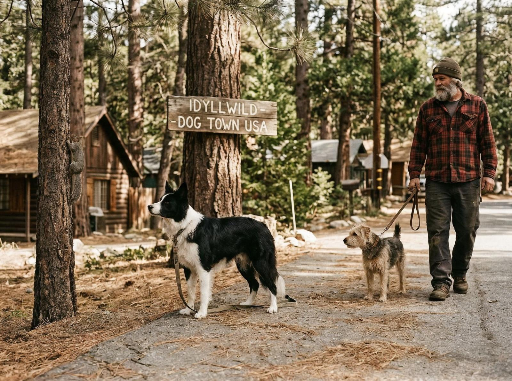
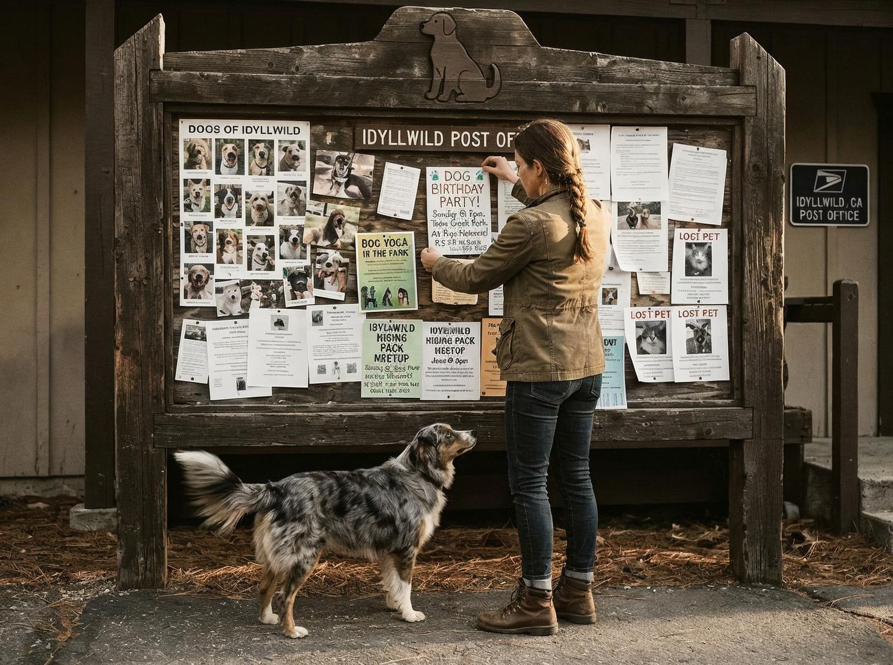

Dacă ai fi acolo acum, în Munții San Jacinto din California, ai vedea câini peste tot. Nu doar ca animale de companie — ca rezidenți, ca membri ai comunității, ca cetățeni cu drepturi depline. Idyllwild, un oraș montan de aproximativ 4.000 de locuitori, e cunoscut pentru o tradiție unică: alegerea unui câine ca primar.
Tradiția a început în 2012, când doi câini — Max și Mitzi — au concurat pentru funcția de primar. Câștigătorul a fost Max, un Golden Retriever care a servit ca primar timp de doi ani. Din acel moment, Idyllwild a devenit faimos în întreaga lume pentru această tradiție neconvențională.
Ceea ce e interesant e că alegerea nu e doar o glumă — e o tradiție care unește comunitatea. Locuitorii votează, organizate campanii, fac donații pentru refugiile de animale locale. Nu e doar despre alegerea unui câine — e despre comunitate, despre solidaritate, despre umor.

Mergi pe străzile Idyllwild și vezi magazine, restaurante, ateliere — toate dedicate câinilor. Există un "Câinele Zilei" în fiecare local, există terenuri de joacă pentru câini, există evenimente speciale pentru animalele de companie.
Idyllwild e situat la 1.600 metri altitudine, în Munții San Jacinto. E un oraș montan cu o istorie lungă — a fost fondat în 1899 ca un centru pentru turism și recreație. Munții oferă trasee de drumeție, locuri de schiat, vederi spectaculoase.
E genul de loc pe care îl înțelegi doar când vezi un câine primind o vizită oficială, când vezi un copil jucându-se cu primarul patruped, când auzi râsetele oamenilor care participă la alegere. Idyllwild nu e doar un oraș — e o comunitate care nu ia totul prea în serios.

Idyllwild nu e despre politică și birocrație — e despre umor, despre comunitate, despre oameni care au găsit să sărbătorească viața în cel mai neconvențional mod posibil. Unde câinii domnesc, unde primarul lătră, unde alegerea e o sărbătoare.
Poate că nu vei avea niciodată un câine ca primar. Poate că nu vei fi niciodată în Idyllwild. Dar merită să știi că există. Idyllwild e un argument că comunitățile pot fi creative, că tradițiile pot fi neconvenționale, că umorul poate face parte din politică chiar în munții Californiei.